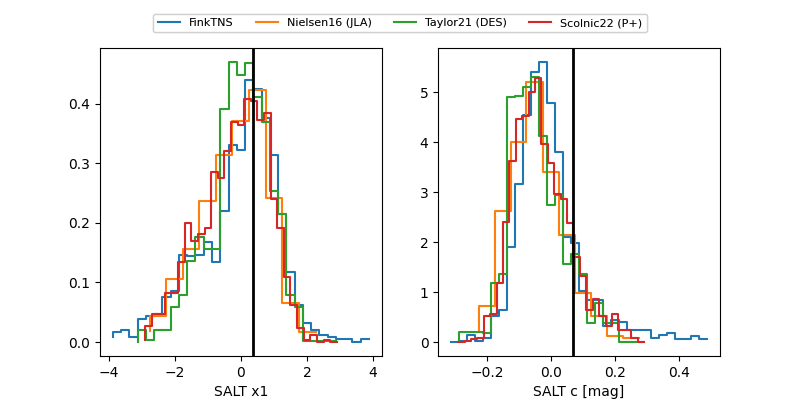

2025agtp
Target 2025agtp at 2025-12-20 03:04
Aliases and brokers:
FINK: fink-portal.org/ZTF25achmnqk
Lasair: lasair-ztf.lsst.ac.uk/objects/ZTF25achmnqk
ALeRCE: alerce.online/object/ZTF25achmnqk
TNS: wis-tns.org/object/2025agtp
YSE: ziggy.ucolick.org/yse/transient_detail/2025agtp
alt names
ZTF25achmnqk (ztf,fink_ztf)
2025agtp (tns,yse)
Coordinates:
equatorial (ra, dec) = 8.8020,+4.88446
equatorial (HMS+DMS) = 00:35:12.47,+04:53:04.07
galactic (l, b) = (115.3403,-57.74785)
Flags:
Photometry:
last ztfg=20.15
3 ztfg detections
Lightcurve

Visibility


Additional plots
